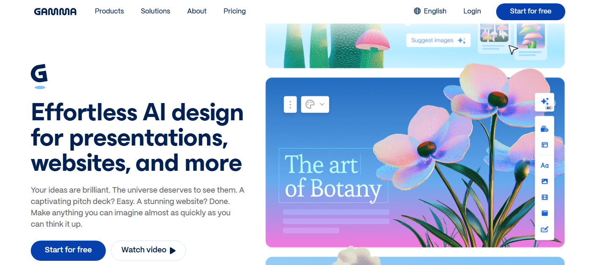
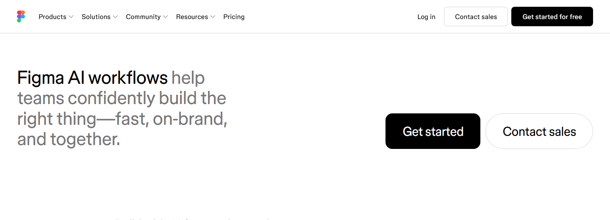
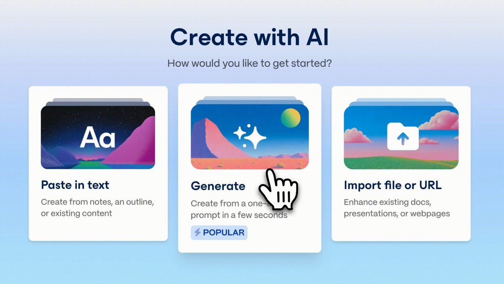
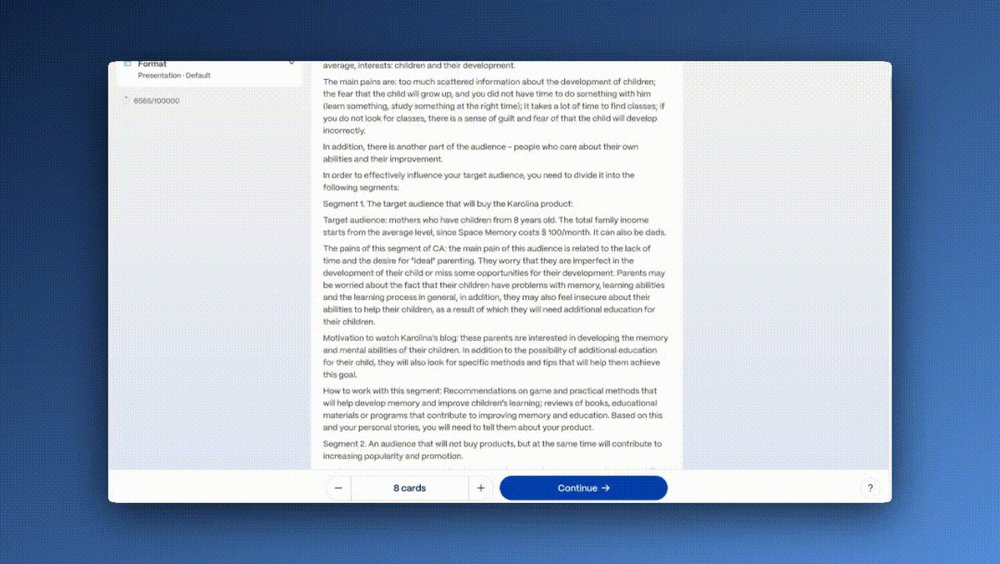
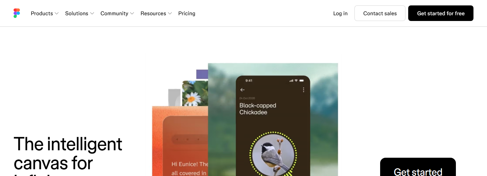

Session 3 • Smart Learning Series
AI for Presentations
& Design
Turn an idea into a polished deck and a clean interface in minutes — with Gamma and Figma AI.
Press → / Space to advance · ← to go back · F for fullscreen
Session 3 • Why & what
Presenting well is a career skill
Professional communication and visual presentation are core academic and industry skills — and layout/polish usually eats the time you meant to spend on the message. AI flips that.
- Generate a presentation or report with Gamma.
- Know Figma AI and where interface design happens.
- Tell apart wireframe · mockup · prototype.
- Ship a seminar deck you built and refined yourself.
Session 3 • The toolkit · the real thing
This is what you'll open today


Both are free for students and run in the browser — no install.
Session 3 • The toolkit · visualize it
Two tools, two jobs
Use Gamma when the output is a deck, doc or page. Reach for Figma when you design a screen or an app.
Session 3 • Gamma · visualize it
How Gamma builds a deck
From a prompt
Describe the topic → a full first-draft deck.
From your text
Paste notes → Gamma structures them into slides.
Themes
One click restyles the whole deck consistently.
Export
Share a link, or export to PDF / PowerPoint — docs & webpages too.
Session 3 • Gamma · inside the tool
Step by step — start to outline


Real screens from Gamma (source: Gamma Help Center) — this is exactly what you'll see in the lab.
Session 3 • Gamma · inside the tool
Step by step — cards, visuals, done


Session 3 • Gamma
Prompts you can steal today
Session 3 • Figma AI · the real thing
Where interfaces are designed

- You design screens — apps, websites, dashboards.
- Figma AI drafts a first design, renames layers, fills placeholder content.
- Free for students; runs in the browser.
Gamma presents your content. Figma is where you design the product itself.
Session 3 • Design basics · visualize it
Wireframe → Mockup → Prototype
Wireframe = where things go · Mockup = how it looks · Prototype = how it behaves.
Session 3 • Design basics · visualize it
Anatomy of a screen (wireframe)
Start every design here — block out nav, headline, call-to-action, image and cards before styling anything.
Session 3 • Prototyping · visualize it
Linking screens into a flow
A prototype connects your screens: tap a card → details → submit → success. No code — you wire up the experience so you can test it and show it.
Session 3 • Hands-on
Activity — build your seminar deck
- On
gamma.app: generate a 10–12 slide deck on your seminar topic (audience + one idea per slide + a visual on each). - Refine: pick a clean theme, trim text to phrases, add title & summary slides.
- In Figma: sketch a wireframe / mockup of your title screen.
- Export as PDF (8–12 slides).
Session 3 • Deliverable
What to submit — and the bar to clear
- The Gamma share link to your deck
- The deck exported as PDF (8–12 slides)
- Screenshots: title slide + one content slide
- One Figma wireframe / mockup screenshot
- 3-line reflection: what AI did well, what you fixed by hand
Bundle into one PDF → RollNo_Name_Session3.pdf
Now — hands-on
Recap — Gamma for decks, docs & pages · Figma AI for screens · wireframe → mockup → prototype · submit one seminar deck.
gamma.app · figma.comSubmission deadline as announced in class — ask your doubts now or during the lab.